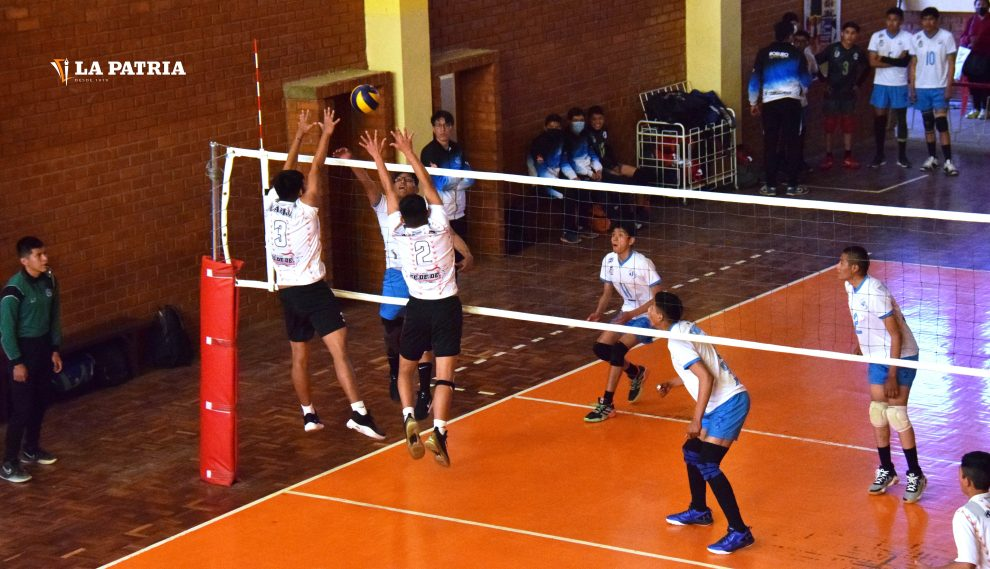
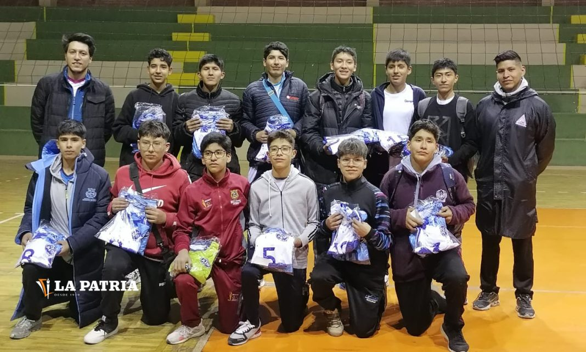
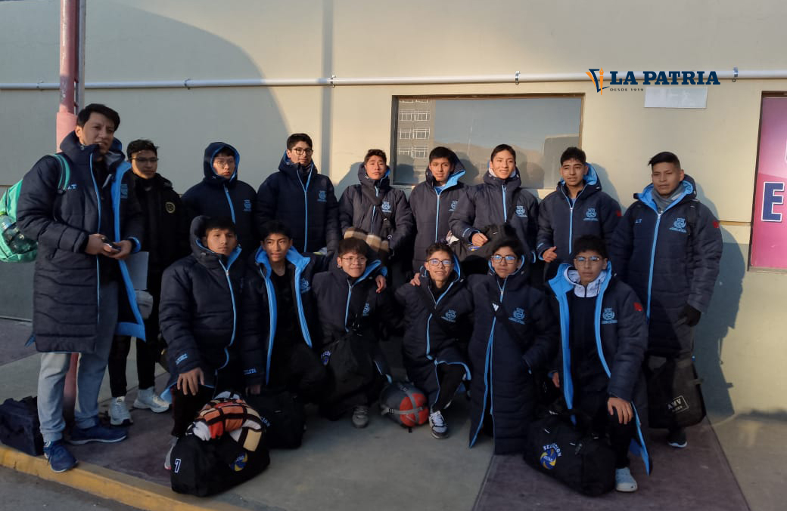

Competencias Locales
Disfruta de los torneos organizados por la Asociación de Voleibol Oruro, donde participan los mejores clubes de la región.

Entrenamientos y Desarrollo
Fomentamos el crecimiento deportivo desde categorías infantiles hasta profesionales.

Equipos y Categorías
Cada club cuenta con categorías en ambas ramas: juvenil, menores, primera y más.

Árbitros y Organización
Nuestros árbitros certificados garantizan el juego limpio y profesional en cada encuentro.